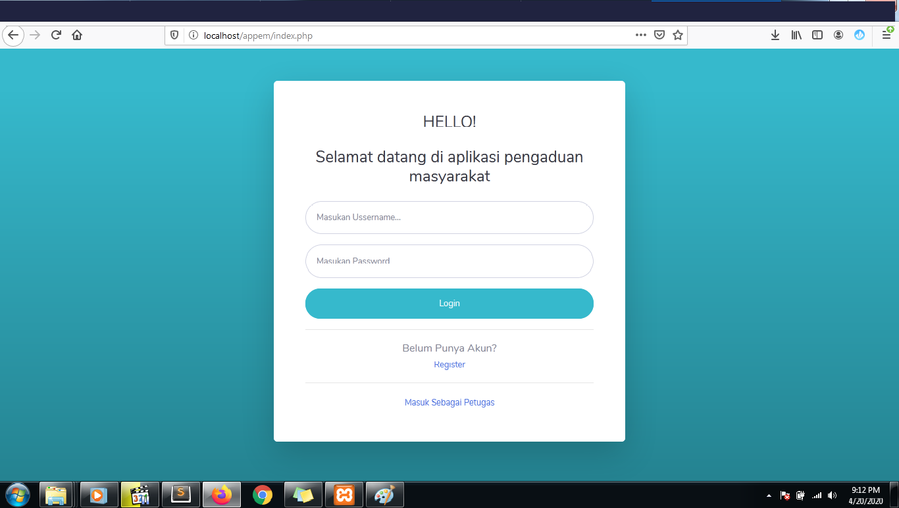
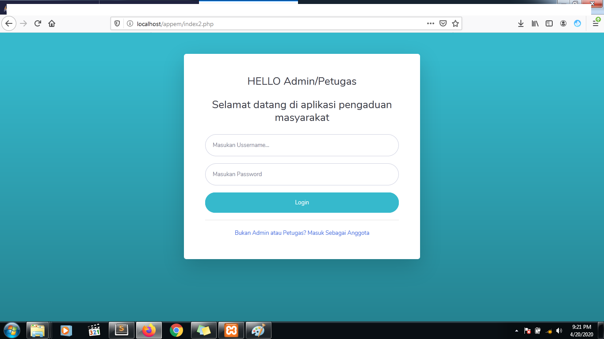
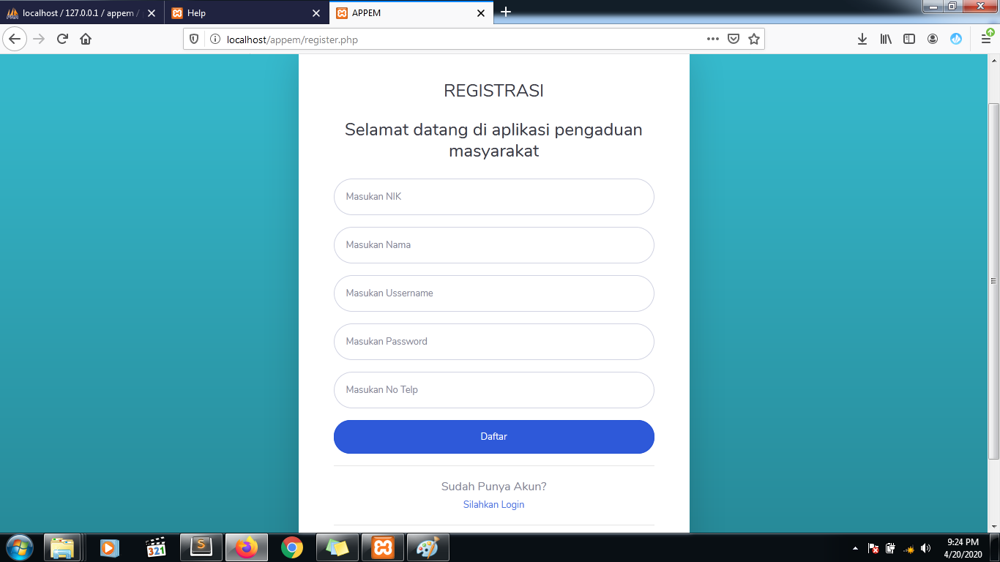
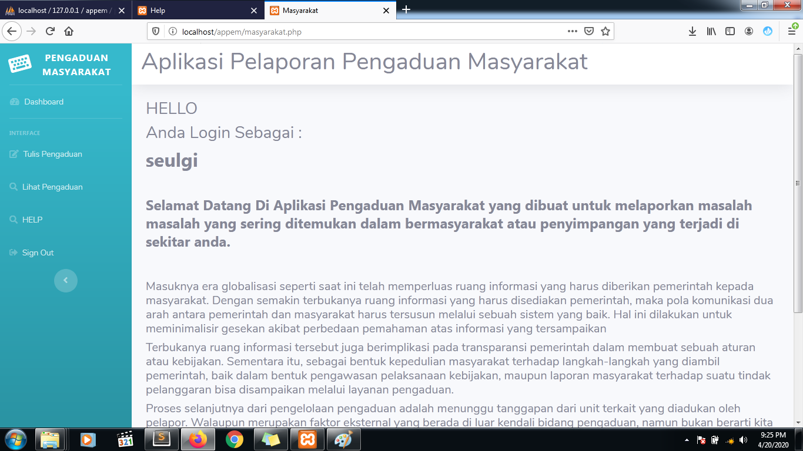
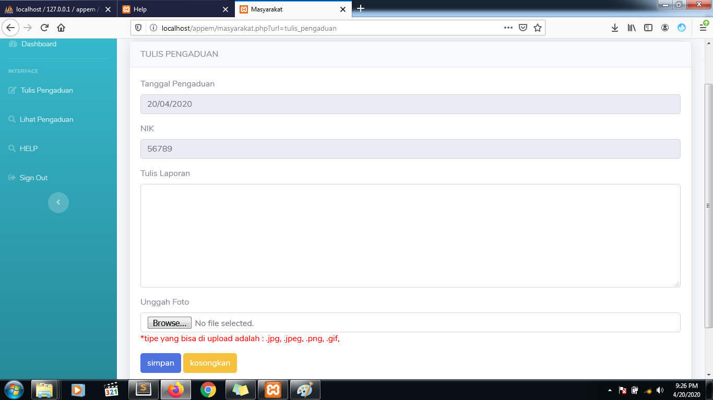
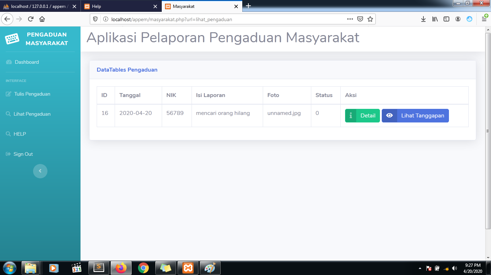
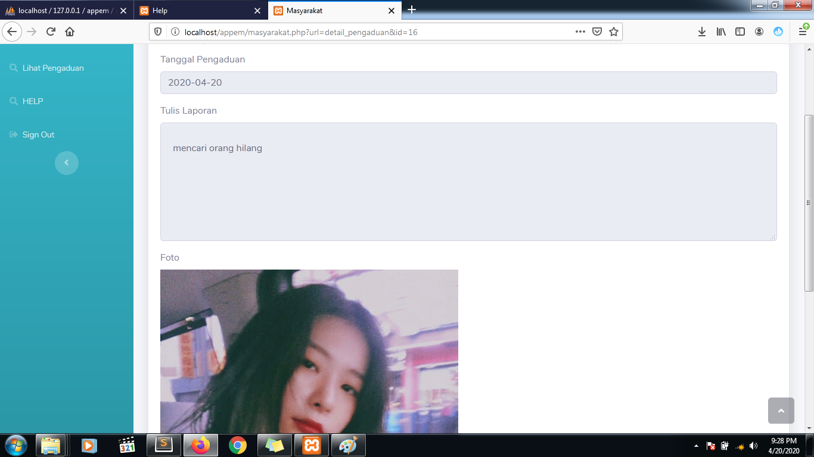
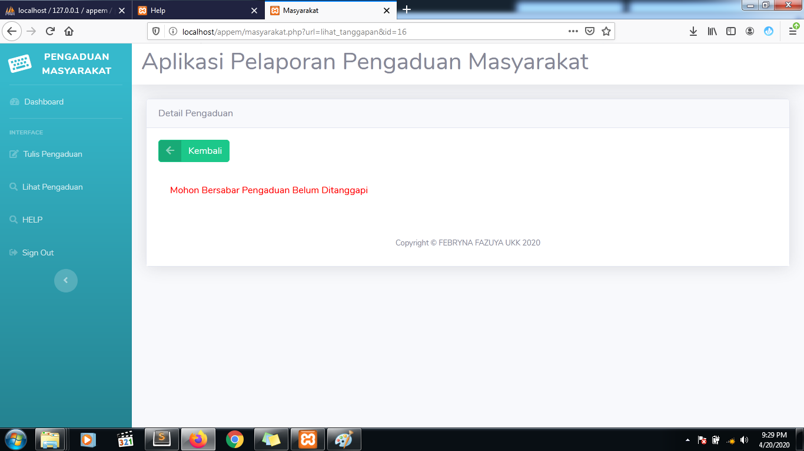

Selamat Datang
Panduan Penggunaan APPEM
- HALAMAN UNTUK LOGIN SEBAGAI MASYARAKAT, YANG TERDAPAT INPUT UNTUK MEMASUKAN USERNAME DAN PASSWORD BAGI MASYARAKAT YANG SUDAH MEMLIKI AKUN

- HALAMAN UNTUK LOGIN SEBAGAI PETUGAS/ADMIN, YANG TERDAPAT INPUT UNTUK MEMASUKAN USERNAME DAN PASSWORD UNTUK PARA PETUGAS/ADMIN

- HALAMAN UNTUK REGISTRASI SEBAGAI MASYARAKAT, UNTUK MASYARAKAT YANG BELUM MEMLIKI AKUN UNTUK MENDAFTAR TERLEBIH DAHULU

- HALAMAN UTAMA SEBAGAI MASYARAKAT DAN TERDAPAT BEBERAPA MENU NAVIGASI, YANG PERTAMA MASYARAKAT DAPAT MENGADU, KEMUDIAN MASYARAKAT DAPAT MELIHAT APAKAH ADUANYA SUDAH DI KONFIRM ATAU BELUM

- HALAMAN UNTUK MASYARAKAT MENGAJUKAN ADUAN KEPADA ADMIN/PETUGAS, DIMANA NIK DAN TANGGAL SUDAH DI SERTAKAN SAAT MASYARAKAT MENGADU DAN SUDAH DISEDIAKAN FITUR UPLOAD FOTO SEBAGAI BUKTI LEBIH KUAT DENGAN MENEKAN TOMBOL UPLOAD

- HALAMAN UNTUK MASYARAKAT MELIHAT APA ADUANNYA SUDAH DIVERIFIKASI/BELUM

- HALAMAN UNTUK MASYARAKAT JIKA MENEKAN TOMBOL DETAIL DI HALAMAN DETAIL PENGADUAN DAN MELIHAT ISI PENGADUAN

- HALAMAN UNTUK MASYARAKAT JIKA MENEKAN TOMBOL LIHAT TANGGAPN DI HALAMAN DETAIL PENGADUAN DAN MELIHAT ISI TANGGAPAN YANG DIBERI DARI PETUGAS
